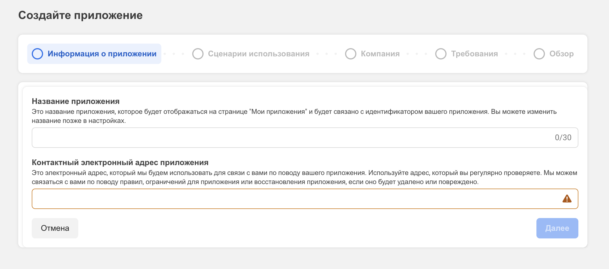
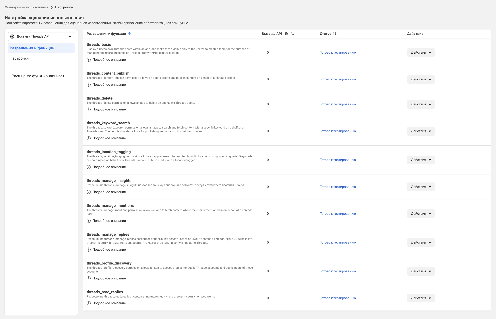
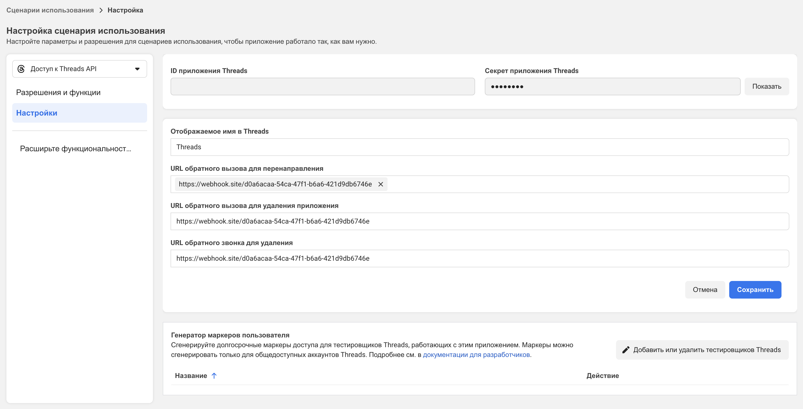
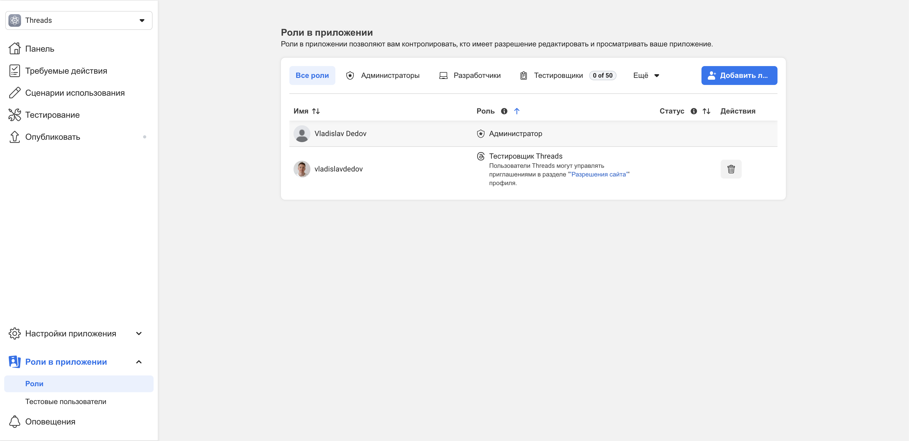

Во-первых, нужен аккаунт на facebook.com.
После того как убедитесь, что аккаунт активен и вы можете получать уведомления на почту/телефон для подтверждения действий, переходите дальше.
Вам понадобится сайт разработчиков: developers.facebook.com.
Перейдите на сайт. Если вы ещё не регистрировались, в правом верхнем углу будет возможность создать аккаунт разработчика.
Если получилось зарегистрироваться — поздравляю! Большое дело сделано. Продолжим.
Создание приложения
Далее необходимо создать приложение. Для этого откройте аккаунт разработчика и нажмите кнопку «Создать приложение».
- На первом шаге укажите название приложения.
- Если не подтянулась электронная почта, добавьте её вручную.
- На шаге «Сценарии использования» выберите «Доступ к Threads API» (на момент написания статьи этот сценарий находится в «Популярном»).
- На шаге «Компания» выберите, что ничего подключать не хотите.
- Шаг с требованиями также пропустите.
- Последний шаг — превью. Нажмите «Открыть панель» (админка может попросить пароль от аккаунта).
Настройка приложения
Для настройки приложения потребуется callback (вебхук). Можно использовать сервис webhook.site.
Перейдите по ссылке — будет создан временный вебхук, который скоро понадобится.
Вернёмся в админку. В дашборде найдите вкладку «Сценарии использования», перейдите в неё, нажмите «Настроить» приложение и убедитесь, что выбран подтаб «Разрешения и функции». Добавьте все сценарии (их около 10).
Затем перейдите в подтаб «Настройки», укажите URL вебхука в поле Callback URL и сохраните.
Теперь в левом меню откройте «Роли в приложении» → «Роли». Нужно добавить пользователя с ролью «Тестировщик Threads» (кнопка «Добавить…»). После выбора нужной радиокнопки появится поле поиска аккаунта — введите ник (username) в Threads. Найдите нужную учётную запись и добавьте.
После добавления статус будет «На рассмотрении». Зайдите в веб-версию Threads → «Настройки» → «Аккаунт» → «Разрешения сайта» → «Приглашения» и примите приглашение от вашего приложения (может прийти не сразу).
Готово. Основная часть выполнена. Пора получать access token и делать тестовый запрос.
Перед этим в админке Meta откройте страницу «Настройки приложения» → «Основное» и сохраните где-нибудь ID приложения Threads и секрет приложения — они скоро понадобятся.
Не забудьте держать под рукой и ссылку вебхука (ту, что сгенерировал webhook.site).
Работа через Jupyter Notebook и Python
Для удобства используем Jupyter Notebook + Python. Если ещё не установлены — установите с официальных сайтов.
Откройте Jupyter и последовательно выполните шаги ниже.
Базовые переменные
import requests
import json
client_id = '' # заполни значением ID приложения Threads
client_secret = '' # заполни значением секрет приложения Threads
redirect_uri = '' # заполни значением ссылки из webhook.site
scope = 'threads_basic,threads_content_publish,threads_delete,threads_keyword_search,threads_location_tagging,threads_manage_insights,threads_manage_mentions,threads_manage_replies,threads_profile_discovery,threads_read_replies'Формирование ссылки для OAuth-авторизации
from urllib.parse import quote
authorize_url = (
f"https://threads.net/oauth/authorize"
f"?client_id={client_id}"
f"&redirect_uri={redirect_uri}"
f"&scope={quote(scope)}"
f"&response_type=code"
)
authorize_urlРезультатом будет длинная ссылка. Перейдите по ней — откроется браузер и произойдёт редирект на страницу авторизации, где нужно нажать «Продолжить как …».
Не закрывая вкладку, скопируйте URL, на который вас вернуло, и вставьте ниже в переменную returned_url.
Получение code из возвращённого URL
returned_url = ''
code = returned_url.replace(app_uri + '?code=', '').replace('#_', '')Обмен code на access_token
access_token_url = f'https://graph.threads.net/oauth/access_token'
access_token_data = {
'client_id': client_id,
'client_secret': client_secret,
'grant_type': 'authorization_code',
'redirect_uri': redirect_uri,
'code': code
}
access_token_resp = requests.post(access_token_url, data=access_token_data)
access_token = access_token_resp.json()['access_token']Если всё выполнено корректно, следующие блоки будут работать с API.
Получение ID пользователя
me_url = f'https://graph.threads.net/v1.0/me?fields=id,username,name,threads_profile_picture_url,threads_biography,is_verified&access_token={access_token}'
me_resp = requests.get(me_url)
me_resp_json = me_resp.json()Пример: статистика из вкладки Insights
import pprint
threads_insights_url = f'https://graph.threads.net/v1.0/{me_resp_json['id']}/threads_insights?metric=likes&access_token={access_token}'
threads_insights_resp = requests.get(threads_insights_url)
threads_insights_resp_json = threads_insights_resp.json()
pprint.pprint(threads_insights_resp_json)Если результат похож на следующий — это успех:
{
"data": [
{
"id": ".../insights/likes/day",
"name": "likes",
"period": "day",
"total_value": { "value": 19 }
}
]
}Полезные ссылки
- Meta for Developers
- Документация Meta
- Threads API (обзор)
- Graph API — обзор
- Документация Python
- Jupyter
Важно
- Проверяйте соответствие
redirect_uriв настройках приложения и в запросе обмена токена. - Храните секреты вне репозитория (переменные окружения, секрет-хранилище и т. п.).
- Обрабатывайте ошибки (
raise_for_status()) и логируйте ответы API.
Заключение
В статье показано, как подготовить аккаунт разработчика, создать приложение, настроить callback (webhook), получить access_token и выполнить первые запросы к Threads API с помощью Python и Jupyter Notebook.